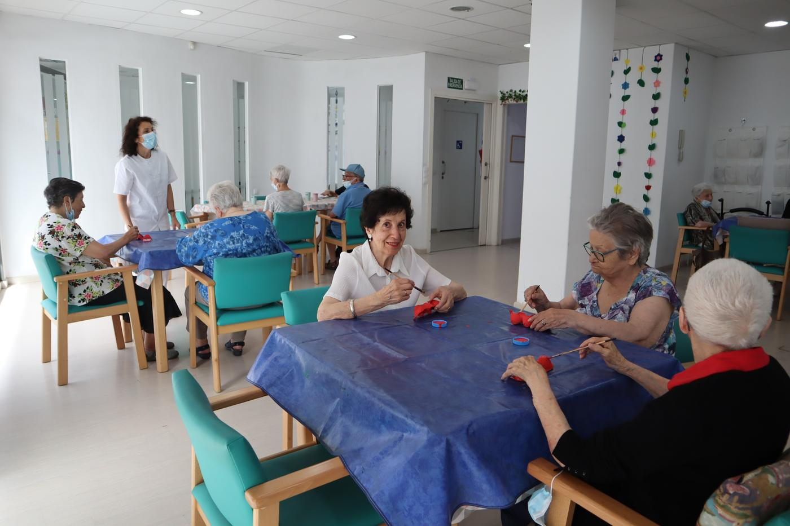

Inici › Els nostres centres › Centre de dia Recreo

Vilanova i la Geltrú
Centre de dia Recreo
Un centre de Grup Cuida
- Adreça
- Carrer del Recreo, 80, 08800 Vilanova i la Geltrú
- Horari
- Dilluns a divendres
8:00 – 19:00 - Telèfon
- 938 93 36 20 · 638 30 50 32
- Correu
- administracio@cuida.cat
El Centre de Dia Recreo, situat al municipi de Vilanova i la Geltrú, ofereix un espai d’atenció diürna personalitzada per a persones grans, adaptat a les necessitats de cada usuari. El nostre objectiu és mantenir, preservar i/o millorar la funcionalitat, promovent l’autonomia i una estada adequada al seu entorn habitual.
El centre compta amb instal·lacions segures i còmodes, on es duen a terme activitats que fomenten la interacció social, l’estimulació cognitiva i el benestar general. El nostre equip humà proporciona un tracte proper i professional, centrant-se en la persona i les seves necessitats.
A Recreo treballem per:
- Retardar o evitar la institucionalització
- Donar suport a les famílies i/o cuidadors
- Atendre les necessitats bàsiques, terapèutiques i socioculturals
- Afavorir un estat psicoafectiu positiu
Serveis del centre
Fisioteràpia
Millorem la mobilitat, alleugem molèsties i promovem el benestar físic, amb una atenció adaptada a cada persona.
Infermeria
Seguiment de constants vitals, gestió i administració de medicaments, revisió de dietes i promoció de la salut.
Teràpia ocupacional
Entrenament en les activitats de la vida diària, tallers d'estimulació cognitiva i assessorament en ajudes tècniques.
Auxiliar de geriatria
Acompanyament i ajuda en la higiene, l'alimentació i les activitats de cada dia, hidratacions i servei de dutxes.
Educació social
Activitats d'animació, festes populars i tallers manuals i creatius que fomenten la motivació i les relacions.
Transport adaptat
Anem a buscar i tornem a casa amb transport adaptat, perquè arribar al centre sigui còmode.
Podologia
Atenció especialitzada per a la cura dels peus i una mobilitat còmoda i saludable.
Atenció domiciliària
Suport a casa per a persones amb autonomia limitada, perquè puguin continuar al seu entorn amb bones condicions.
Activitats
- Estimulació cognitiva
- Manteniment de la capacitat funcional
- Reeducació de les activitats de la vida diària
- Activitats d'oci i tallers creatius
- Sortides per l'entorn
- Festes populars i visites al centre
Ressenyes
El meu pare ha estat un any anant al Centre de Dia Recreo. L'equip de cuidadores és estable, la qual cosa ens dona confiança i tranquil·litat, i donen una acurada atenció. Són magnífiques professionals. La direcció també ha estat sempre a sobre per adaptar-se als canvis i successives necessitats i la feina de la neuropsicòloga ha estat rellevant. I tot això, sense sortir del barri. Molt agraïts.
El centre està molt bé i les treballadores són encantadores i tracten molt bé els avis. A més els gerents sempre t'ajuden en el que els demanes. Hi ha molta qualitat humana i la meva àvia està encantada! Ho recomano molt.
Com arribar-hi
Carrer del Recreo, 80, 08800 Vilanova i la Geltrú · Obrir a Google Maps